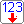
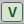
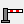
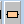
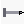
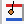
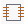

The component bar is at the top of the panel. Choose a component there and then place it with a click on the panel. If the window is too narrow for all buttons, the remaining buttons go to a second row.
The components are divided into three groups, from left to right in a circuit: input → processing → output.
| Button | Name | What does it do? |
|---|---|---|
| Connection | Turns wire mode on or off. See Connections. |
The inputs are in the Power group: the switch or push button, the changeover switch, the LDR, the NTC, the pulse generator and the DIP switch, with terminals between the + rail and the input. The old inputs without terminals (see Inputs) are no longer in the bar.
| Button | Name | What is it? |
|---|---|---|
 | AND gate | Output on when all inputs are on. |
 | OR gate | Output on when at least one input is on. |
 | NOT gate | Inverts the signal. |
 | NAND gate | Output off when both inputs are on. |
 | NOR gate | Output on when both inputs are off. |
 | XOR gate | Output on when exactly one input is on. |
 | Counter block | Counts pulses and passes the count on in binary. |
 | Flip-flop | Remembers one bit (SR, D, JK or T). |
 | Step counter | Counts pulses up to 9999 and shows the count on a display. |
 | Stopwatch | Measures time (MM:SS) while S is on; Q comes on at the end time. |
 | Memory block | Passes on the content of a chosen memory location. |
| Button | Name | What is it? |
|---|---|---|
 | Lamp | Lights when the input is on. |
 | Motor | Turns left (input L) or right (input R). |
 | 7-segment display | Shows a digit or letter. |
 | Voltmeter | Shows the voltage, for example 3.3 V. |
 | Milliammeter | Shows the current in mA; only visible when the power buttons are switched on. |
 | Wattmeter | Shows the power in W of everything after it; only visible when the power buttons are switched on. |
 | Oscilloscope | Draws the voltage between + and − over time. |
 | Person | Walks left (input L) or right (input R); limit switches S1 and S2 report where he is. |
 | Cart | Drives forward (input V) or backward (input A) along a winding road; Start, Finish and Tel (a pulse at each post) report where it is. |
 | Music box | Keyboard with 8 piano keys (do to do'), one input per key: on lights up the key and plays the note. |
 | Traffic light | Traffic light for cars (red, amber, green) with a pedestrian light; five inputs, like UIT0 to UIT4 of LogicRun. |
 | Barrier gate | Barrier gate of a car park; input O opens the barrier, limit switches Closed and Open. |
| Button | Name | What is it? |
|---|---|---|
 | + rail | Power rail for the inputs; the voltage comes from the source. |
| − rail | Ground rail (0 V) for the outputs. | |
 | Source (battery) | Voltage source of 0 to 12 V with a slider. |
 | AC voltage source | AC voltage up to 12 V peak, slowed down to 0.5, 1 or 2 Hz. |
 | Fuse | Blows when too much current flows. |
 | Resistance (contact) | Contact or wire with a small resistance: voltage drop U = I × R. |
 | Potentiometer | Resistor with a wiper and three terminals (A, B and L); drag the wiper with the mouse. |
 | LDR | Light-dependent resistor; set the light with the slider. |
 | NTC | Temperature-dependent resistor; set the temperature with the slider. |
 | Diode | Lets current through in one direction only (from A to K), above 0.7 V. |
 | Changeover switch | Three terminals: the middle is connected to A or to B. Two of them switch a lamp from two places (staircase). |
 | Pulse generator | Switch that opens and closes by itself: pulses from 0.5 to 5 Hz. |
 | DIP switch | Four small switches: a number from 0 to 15 on the outputs 8, 4, 2 and 1. |
| Transistor | NPN or PNP with three terminals (C, B and E): Ic = β × Ib. | |
 | Buzzer | Buzzer with two terminals: sounds from 10 mA, also on a gate. |
 | Relay | Coil with two terminals and a changeover contact (C, NO, NC). |
 | Bar magnet | Magnet with a north pole (red) and a south pole (blue), without terminals. |
 | Compass | A needle that points along the magnetic field. |
 | Field line sheet | Shows the field lines of the magnets lying on it, like iron filings. |
 | Coil | Coil with turns in the circuit: with a current it becomes a magnet. |
 | Nail | A piece of iron: a magnet or a coil with a current pulls it. |
 | Relay (open model) | A coil on a core, an armature with a spring and three contacts: how a relay works inside. |
 | Current swing | A copper rod between the poles of a U-magnet: with a current it swings out (Lorentz force). |
 | Electric motor (model) | A coil turning between two poles, with commutator and brushes. |
 | Centre-zero meter | Galvanometer with the zero in the middle: shows the current and its direction. |
 | Rotating magnet | A strong magnet on an axle, as in a dynamo; click to make it turn. |
 | Transformer | Two coils on an iron core: steps an alternating voltage up or down. |